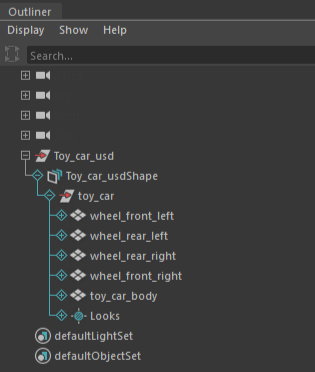
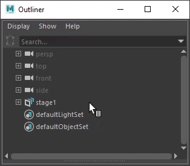

The mixed data model: to distinguish intrinsic Maya data from USD data in the Outliner hierarchy tree, USD data features a unique default data branch color of aqua.

After creating a stage, Maya creates a transform node and a proxyShape node. The proxyShape node points to the USD file and appears in the Outliner. In the following example, stage1 is the transform node and stageShape1 points to the newly created USD stage or proxyShape node.
To set the Outliner text color for a USD prim, select the prim, then navigate to the Attribute Editor and set the color under Object Display.

If your Maya scene contains multiple stages, you can work to select a stage as you do in the Attribute Editor. You can either pin a current view, or by default, the focus of your USD stage in the USD Layer Editor changes depending on your selection in the Outliner. Thus, if you select prim in the Outliner, the USD Layer Editor will auto-focus to the stage of your selection, so long as there is no pinned stage. See Work with the USD Layer Editor for more information on pinning your stage.
usdEditasMaya set in the OutlinerYou can work with Maya and USD data interchangeably in Maya. When you pull a USD prim into Maya data or Edit as Maya, a new set appears in the Outliner called usdEditasMaya. Tip: this can help you keep track of the pulled Maya nodes even if your USD hierarchy undergoes changes. The Outliner contextual menu for this set of nodes contains the same two options as the pulled prim (Merge Maya Edits to USD and Discard Maya Edits).
usdEditAsMaya set. You will only be able to Discard Maya Edits in this case. Orphaned data appears greyed out and with a red x icon on the pulled prim in your usdEditAsMaya set. if you have multiple pulled nodes from multiple stages at once, you can have a visual indication of what stage each node is pulled from. You can hover over the pulled Maya nodes in the usdEditAsMaya set for a tooltip on which stage each node belongs to. In this tooltip, you can also view other details of the node such as Node name, Type, Stage and Locked Node (if applicable).
When a node is locked using this MEL command, the existing tooltip on the node has a line added to it that says: Locked Node. When unlocked, the status disappears.
usdEditAsMaya data sets have their nodes locked.Related Concepts: For more information on what a stage is, see Create a USD stage.